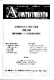
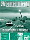
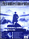

Lista de números
01
ene-85
Acontecimiento. Órgano de expresión del Instituto Emmanuel Mounier
02
abr-85
Acontecimiento nº2
03
oct-85
Acontecimiento nº3
04
ene-86
Personalismo, política de empleo, economía y comunicación social
05
abr-86
Dimensiones y problemas de la paz
06
oct-86
La escuela
07
ene-87
Para salir de la crisis
08
abr-87
Humanismo y transcendencia
09
oct-87
Desarrollos de la autogestión
10
ene-88
Vida privada y proyectos públicos
11
abr-88
El quehacer ético
12
oct-88
Los jóvenes
13
ene-89
El problema del mal
14
abr-89
¿Le sobra a Europa la revolución?
15
oct-89
Perpectivas de la comunicación
16
feb-90
Solidaridad contra pobreza
17
jun-90
Dominación y diversidad cultural

18
oct-90
Emmanuel Mounier 1950-1990. Memoria y compromiso
19
feb-91
Convertirse al rostro del otro
20
jun-91
¿Ítaca o becerro de oro? El capitalismo civilizado
21
oct-91
En una sociedad violenta
22
ene-92
Democracia. Grandeza y servidumbre
23
jun-92
Arte y persona
24
jul-92
¿Qué hacer, cómo hacer?
25
oct-92
¿"Dónde está tu hermano en el 92"?
26
ene-93
Cartas a la sociedad española
27
abr-93
El nuevo desorden mundial
28
jul-93
¿Una elección racional?
29
oct-93
Política y caridad
30
ene-94
Crisis de la conciencia emancipatoria
31
abr-94
El malestar en el reino del bienestar
32
jul-94
¿"Logsificación" y/o educación?
33
oct-94
Modernidad y religiones
34
ene-95
Pluralismo religioso
35
abr-95
La experiencia ética
36
jul-95
Presupuestos éticos para una democracia real
37
oct-95
De El Cairo a Pekín. ¿Cuánto vale la vida de un pobre?
38
ene-96
Los medios de comunicación...y sus fines
39
abr-96
¿Es usted de derechas o de izquierdas?
40
jul-96
Trabajo-Paro, el último desafío posmoderno
41
oct-96
La vida cotidiana
42
ene-97
Filosofía para un tiempo de crisis
43
abr-97
La cárcel
44
jul-97
Afrontar el paro
45
oct-97
Los dogmas laicos de hoy
46
ene-98
España, fin de siglo
47
abr-98
En la frontera
48
jul-98
Economía sin paro ni hambre
49
oct-98
Sal de tu tierra. La inmigración en España
50
ene-99
América Latina como esperanza
51
abr-99
Horizontes literarios del mundo personal
52
jul-99
De la propiedad capitalista a la propiedad humana
53
oct-99
Nosotros los viejos
54
ene-00
Vocación y realización de la persona
55
abr-00
Una utopía para el tercer milenio
56
jul-00
Mounier: un maestro para nuestro tiempo (1905-1950)
57
oct-00
¡La bolsa o la vida! Los especuladores al asalto
58
ene-01
Violencia y convivencia en la educación
59
abr-01
¿Nacionalismo? No, gracias.
60
jul-01
Valores, virtudes y militancia
61
oct-01
Crisis de la familia

62
ene-02
El mundo rural en la aldea global
63
abr-02
Imperialismo y terrorismo: regreso al estado de naturaleza

64
jul-02
Felicidad y sentido de la vida
65
oct-02
¿Para qué la democracia?
66
ene-03
La religión que hay en las religiones
67
abr-03
La barbarie
68
jul-03
El trabajo
69
oct-03
El fracaso